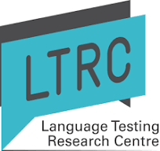
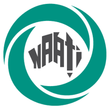
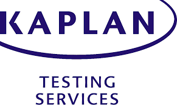
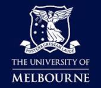

Portfolio
Language Aide (CLA) Test | Role: Project Lead | LTRC | Client: NAATI


Large-Scale School and University Entrance Exam | Role: Project Head | LTRC | Client: (withheld)
Kaplan Test of English | Role: CEFR C2 SME | Client: Kaplan Testing Services (KSE)

DELNA |
Role: Test Development and Evaluation | LTRC | Partner: The University of Auckland
